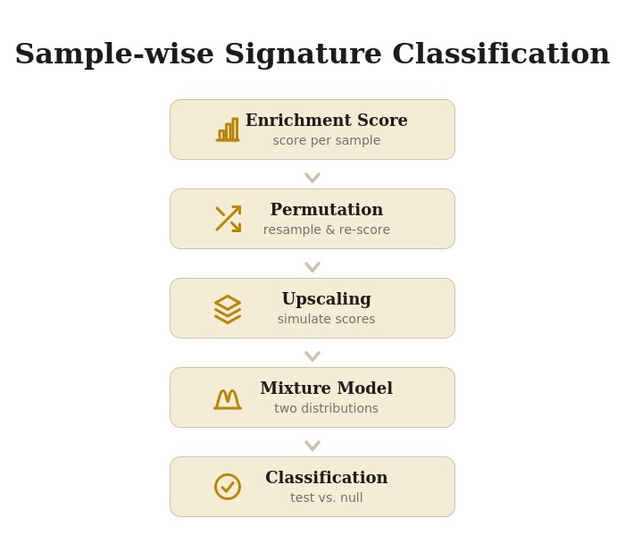
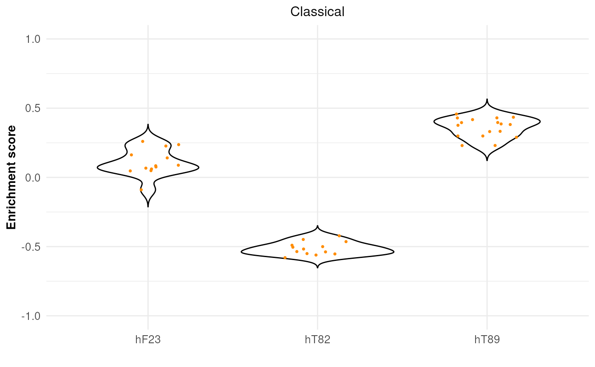
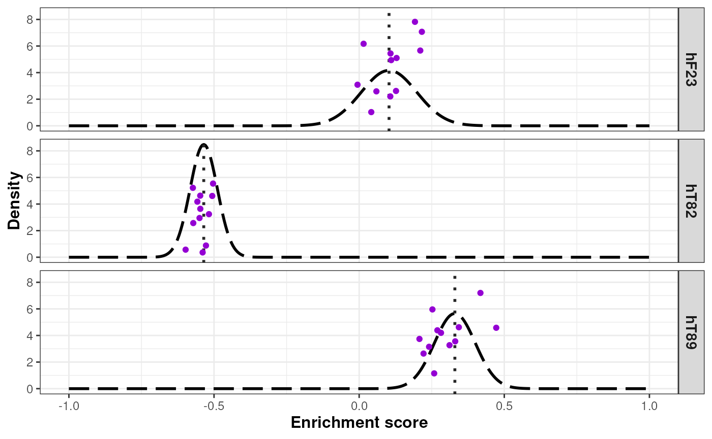
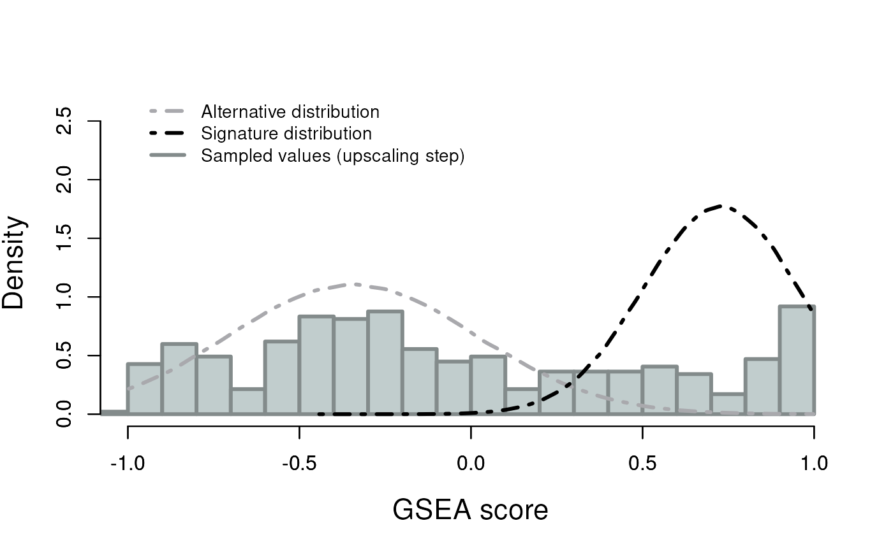
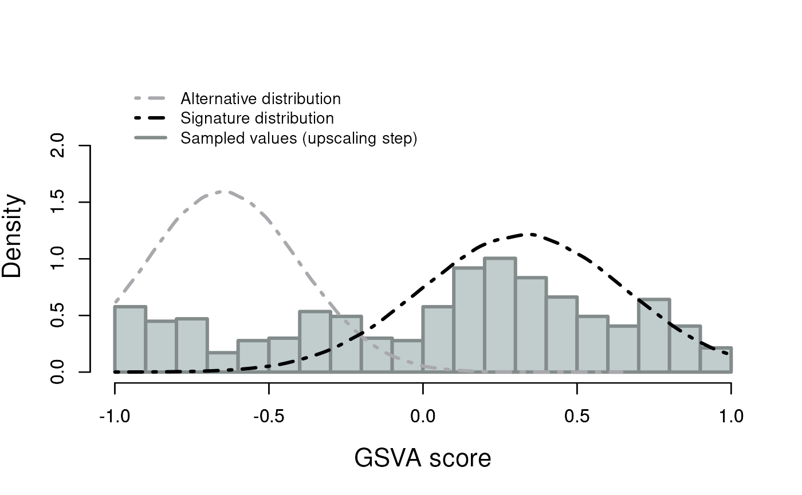
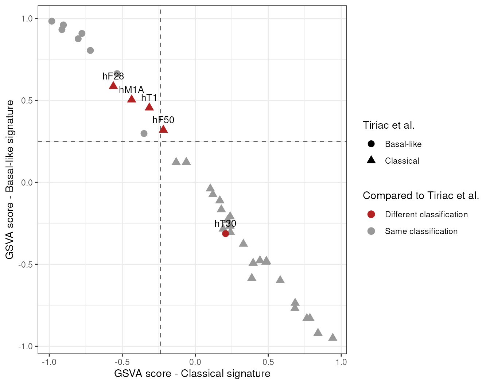

vignettes/splitTypeR.Rmd
splitTypeR.RmdPackage: splitTypeR
Authors: Astrid Deschênes [aut, cre] (ORCID: https://orcid.org/0000-0001-7846-6749), Pascal Belleau
[aut] (ORCID: https://orcid.org/0000-0002-0802-1071), David A. Tuveson
[aut] (ORCID: https://orcid.org/0000-0002-8017-2712)
Version: 0.99.0
Compiled date:
2026-10-22
License: Artistic-2.0
This package and the underlying splitTypeR code are distributed under the Artistic license 2.0. You are free to use and redistribute this software.
If you use this package for a publication, we would ask you to cite the following:
## Citation information for the splitTypeR package
citation("splitTypeR")## To cite package 'splitTypeR' in publications use:
##
## Deschênes A, Belleau P, Tuveson DA (2026). _splitTypeR:
## Transcriptomic Classification using Mixture of Normal Distributions_.
## R package version 0.99.0, <https://github.com/adeschen/splitTypeR>.
##
## A BibTeX entry for LaTeX users is
##
## @Manual{,
## title = {splitTypeR: Transcriptomic Classification using Mixture of Normal Distributions},
## author = {Astrid Deschênes and Pascal Belleau and David A. Tuveson},
## year = {2026},
## note = {R package version 0.99.0},
## url = {https://github.com/adeschen/splitTypeR},
## }Cancer classification, using RNA sequencing, is now part of modern precision oncology. For some cancers, RNA classification provides deep insights into tumor aggressiveness and growth rates. For example, breast cancer subtypes (like Luminal-A, Luminal-B, HER2-enriched, or Basal-like) help forecast patient outcomes (Cascianelli et al. 2020). The Luminal-A is the most common molecular subtype of breast cancer, making up to 60% of all breast cancer cases. It is also associated with good prognosis, while Luminal-B tumors have a more aggressive phenotype and a worse prognosis (Yersal 2014). Once widely accepted by major oncology organizations, gene signatures for RNA subtyping are used to classify cancer subtypes, predict patient survival, and guide treatment.
From a research perspective, the classification of new samples using their transcriptional profiles can be done using different tools. For some cancers, machine learning models and dedicated software are available such as the Bioconductor Genefu package for breast cancer molecular subtyping (Gendoo et al. 2016), and the CMScaller package for subtyping of colorectal cancer (Eide et al. 2017).
In the absence of dedicated software, unsupervised clustering with a heatmap visualization to classify transcriptomic samples with a gene signature is often employed. This method is relatively simple and offers instant visual support. However, this method has a few drawbacks:
The splitTypeR package resolves these issues by providing an automated statistical framework to classify heterogeneous biological samples based on gene signature lists, effectively isolating the signature-positive samples.
This classification method is designed for bulk transcriptomic datasets.
As with any R package, the splitTypeR package should first be loaded with the following command:
The splitTypeR package includes a small
demonstration dataset: two gene signatures (signaturesDemo)
and a matrix of normalized expected counts for 30 patients
(expNormalCountsDemo). The whole subtyping method can be
run on it in a few lines:
## Load the demo signatures and the demo normalized expected counts
data(signaturesDemo)
data(expNormalCountsDemo)
## Fix seed for reproducible results
set.seed(121)
## Run the subtyping method and print the classification of each sample
## The normalized expected counts are log2-transformed
quickResult <- runSubtypingBimodal(geneLists=signaturesDemo,
expectedCountsMatrixLog=log2(expNormalCountsDemo + 1),
permRatio=0.75, permNbr=20, upscaleNbr=10)## number of iterations= 52
## number of iterations= 129
print(quickResult)## Classification:
## Classical Basal-like
## Patient_1 unclassified unclassified
## Patient_2 Classical unclassified
## Patient_3 unclassified Basal-like
## Patient_4 Classical unclassified
## Patient_5 unclassified Basal-like
## Patient_6 Classical unclassified
## Patient_7 unclassified Basal-like
## Patient_8 unclassified Basal-like
## Patient_9 unclassified Basal-like
## Patient_10 Classical unclassified
## Patient_11 Classical unclassified
## Patient_12 unclassified Basal-like
## Patient_13 Classical unclassified
## Patient_14 Classical unclassified
## Patient_15 unclassified Basal-like
## Patient_16 unclassified Basal-like
## Patient_17 unclassified Basal-like
## Patient_18 Classical unclassified
## Patient_19 unclassified Basal-like
## Patient_20 unclassified Basal-like
## Patient_21 Classical unclassified
## Patient_22 unclassified Basal-like
## Patient_23 Classical unclassified
## Patient_24 Classical unclassified
## Patient_25 unclassified Basal-like
## Patient_26 unclassified Basal-like
## Patient_27 Classical unclassified
## Patient_28 unclassified Basal-like
## Patient_29 Classical unclassified
## Patient_30 Classical unclassifiedEach step of the method is detailed in the next section, followed by a complete demonstration on a published dataset.
The following figure represents the statistical method employed to turn a noisy, single-number enrichment score into a confident binary classification of each sample. In summary, the method builds a confidence interval around the enrichment score, models the cohort as a mixture of two biological states, and then statistically tests each sample against that mixture.

General workflow.
The statistical method is split into 5 steps. Each of those steps is performed for one specific signature at a time. A signature is typically a predefined set of features (transcriptomic expression in this situation) that is associated with some biological state, pathway, or phenotype.
The enrichment scores are first computed for every single sample with the Bioconductor GSVA package (Hänzelmann et al. 2013). Those scores represent the real score for each sample. Later steps treat this real score as the anchor point around which uncertainty gets modeled.
Random subsets of samples, of fixed size, from the full dataset are repeatedly drawn. For each of these resampled subsets, the enrichment score for the samples present is recomputed.
This step enables a per-sample uncertainty estimation (standard deviation).
For each sample, a fixed number of simulated enrichment scores are drawn from a normal distribution centered on the real score, using the standard deviation estimated from permutations.
This step enables the upscaling of the total number of values that will be used in the next step.
The synthetic values across all samples are pooled to fit two overlapping normal distributions to them. The two normal distributions are extracted using a mixture model approach implemented in the mixtools package (Benaglia et al. 2009). The assumption is that the whole cohort is a blend of two underlying populations (a “low-mean” population and a “high-mean” population).
Each sample is classified with a one-sided hypothesis test based on the “low-mean” distribution of the mixture model (from Step 4):
The sample’s real enrichment score (from Step 1) is compared to the “low-mean” distribution. The p-value is the probability that this distribution produces a score at least as high as the real score. H₀ is rejected when the real score is above the 95th percentile of the “low-mean” distribution (equivalent to a p-value below 0.05).
When H₀ is rejected (p-value < 0.05), the sample is assigned to the tested signature. Otherwise, the sample is labeled as “unclassified” for that signature.
Since each signature is tested independently, a sample can be assigned to one signature, to several signatures, or to none of them.
The splitTypeR package provides transcriptomic signatures.
The getGeneSignaturesNames() function lists the names of all the available signatures.
## List the names of the available signatures
getGeneSignaturesNames()## [1] "Tiriac_PDAC_PDO_Basal_like" "Tiriac_PDAC_PDO_Classical"
## [3] "Moffitt_Basal_like" "Moffitt_Classical"The getGenesInSignature() function returns the genes of one signature, while the getGeneSignatures() function returns a named list containing one or more signatures. When no name is given, getGeneSignatures() returns all the available signatures.
## Get the genes of the basal-like signature
getGenesInSignature(name="Tiriac_PDAC_PDO_Basal_like")## [1] "ANO1" "ADORA2B" "S100A2" "CSF2" "ANXA1" "EREG"
## [7] "RGS20" "CELSR1" "WNT7B" "AMIGO2" "PTHLH" "C12orf54"
## [13] "TGM2" "REEP3" "DCBLD2" "NMB" "IKZF2" "GPR87"
## [19] "MUC16" "IVL" "SPRR1B" "BCAR3" "TTC9" "PTGES"
## [25] "CST6" "CATSPER1"
## Get all the available signatures and count the genes in each one
allSignatures <- getGeneSignatures()
lengths(allSignatures)## Tiriac_PDAC_PDO_Basal_like Tiriac_PDAC_PDO_Classical
## 26 62
## Moffitt_Basal_like Moffitt_Classical
## 25 25The current signatures are:
The method is not limited to the signatures included in the
splitTypeR package. Any named list of at least two
gene vectors can be passed to the runSubtypingBimodal()
function. The names of the list are used as the signature names in the
results. The gene identifiers must use the same format as the row names
of the expression matrix (e.g., gene names, Ensembl IDs). Genes absent
from the expression matrix are ignored. It is recommended to use
signatures with 10 genes or more to ensure statistical stability and
reliability of the enrichment scores.
## Example of custom signatures
mySignatures <- list(
SignatureA=c("GENE1", "GENE2", "GENE3", "GENE4", "GENE5", "GENE6",
"GENE7", "GENE8", "GENE9", "GENE10", "GENE11"),
SignatureB=c("GENE4", "GENE9", "GENE10", "GENE12", "GENE13", "GENE15",
"GENE16", "GENE17", "GENE18", "GENE19", "GENE20", "GENE21"))For this demonstration, we are going to use the published RNA-seq dataset of pancreatic ductal adenocarcinoma (PDAC) patient-derived organoids (PDOs) published in Tiriac et al. (Tiriac et al. 2018). The RNA-seq has been aligned with GENCODE v48 on GRCh38.p14 genome with STAR v2.7.9a (Dobin et al. 2013). Only one PDO per patient was retained. The expected counts were processed with DESeq2 v1.50.2 (Love et al. 2014) on genes expressed in at least 20% of the PDOs. The normalized expression is available in a SummarizedExperiment object.
In PDAC, the basal-like and classical subtypes, as defined in Moffitt et al. (Moffitt et al. 2015), are the two consistently employed molecular subtypes. The classical signature is associated with better prognosis and better response to standard chemotherapy, while the basal-like subtype is associated with worse overall prognosis (Moffitt et al. 2015; O’Kane et al. 2020). These signatures were later redefined for patient-derived organoids (Tiriac et al. 2018).
The basal-like and classical gene signatures used in the demonstration are the ones defined for PDOs in Tiriac et al. (Tiriac et al. 2018).
## Required package
library(splitTypeR)
## Prepare the PDOs basal-like and classical signatures
signaturesList <- list()
signaturesList[["Basal-like"]] <-
getGenesInSignature("Tiriac_PDAC_PDO_Basal_like")
signaturesList[["Classical"]] <-
getGenesInSignature("Tiriac_PDAC_PDO_Classical")A matrix of normalized expected counts is required. The rows are the genes, while the patients (samples) are the columns.
The row annotation must correspond to the signature format. As an example, if the signatures are composed of gene names, the row annotation for the normalized expected counts must also be gene names.
For GSVA analysis, the normalized expected counts should be log-transformed to enable the use of the Gaussian distribution function. The current behavior of GSVA is to automatically choose one of the available distribution functions.
## Required package
library(SummarizedExperiment)
## Load the SummarizedExperiment object
path <- system.file("extdata", "Tiriac_NormExpCounts.RDS",
package="splitTypeR")
se <- readRDS(path)
## Extract the normalized counts and assign the gene names as row names
## The row names should correspond to the information present in the
## gene signatures. In this case, the gene names are used.
normCounts <- assays(se)[["normalizedCounts"]]
rownames(normCounts) <- rowRanges(se)$gene_name
## Log2-transform the data, adding a small pseudo-count to
## prevent log2(0) errors
log2normCounts <- log2(normCounts + 1)The runSubtypingBimodal function runs all the steps. Three parameters control the permutation and upscaling steps:
| Parameter | Description | Default | Trade-off |
|---|---|---|---|
permRatio |
Proportion of the samples randomly selected in each permutation (Step 2). Must be between 0 and 1, and must not select all the samples. | 0.75 | A lower value creates more variation between permutations, but each GSVA score is computed on fewer samples. |
permNbr |
Number of permutations (Step 2). Must be 5 or higher. | 20 | More permutations give a more stable standard deviation for each sample, but take longer to run since GSVA is run once per permutation. |
upscaleNbr |
Number of values drawn from the normal distribution of each sample (Step 3). Must be 2 or higher. | 10 | More values give more data to fit the mixture model (Step 4), with little impact on the run time. |
Each sample is present, on average, in permRatio ×
permNbr permutations (15 with the default values), which is
the number of values used to estimate its standard deviation.
## Fix seed for reproducible results
set.seed(81)
## Run the subtyping method using the log2-transformed data
result <- runSubtypingBimodal(geneLists=signaturesList,
expectedCountsMatrixLog=log2normCounts,
permRatio=0.75,
permNbr=20,
upscaleNbr=12)## number of iterations= 136
## number of iterations= 135
## Summary of the classification results
print(result)## Classification:
## Basal-like Classical
## hF2 Basal-like unclassified
## hF23 unclassified Classical
## hF24 unclassified Classical
## hF27 unclassified Classical
## hF28 Basal-like unclassified
## hF3 Basal-like unclassified
## hF31 unclassified Classical
## hF32 unclassified Classical
## hF34 unclassified Classical
## hF39 unclassified Classical
## hF43 unclassified Classical
## hF44 unclassified Classical
## hF50 Basal-like Classical
## hF57 unclassified Classical
## hM17D unclassified Classical
## hM19A Basal-like unclassified
## hM1A Basal-like unclassified
## hM8 Basal-like unclassified
## hT1 Basal-like unclassified
## hT101 unclassified Classical
## hT102 unclassified Classical
## hT105 Basal-like unclassified
## hT108 unclassified Classical
## hT123 unclassified Classical
## hT125 Basal-like unclassified
## hT127 Basal-like unclassified
## hT25 unclassified Classical
## hT3 unclassified Classical
## hT30 unclassified Classical
## hT48 unclassified Classical
## hT60 Basal-like unclassified
## hT81 unclassified Classical
## hT82 Basal-like unclassified
## hT85 unclassified Classical
## hT89 unclassified Classical
## hT91 unclassified Classical
## hT93 unclassified Classical
## hT96 unclassified Classical
## hT98 unclassified ClassicalThe resulting object contains information from each step of the process. The information can be accessed using the appropriate getter function.
## Get the list of genes in each signature
signatures(result)## $`Basal-like`
## [1] "ANO1" "ADORA2B" "S100A2" "CSF2" "ANXA1" "EREG"
## [7] "RGS20" "CELSR1" "WNT7B" "AMIGO2" "PTHLH" "C12orf54"
## [13] "TGM2" "REEP3" "DCBLD2" "NMB" "IKZF2" "GPR87"
## [19] "MUC16" "IVL" "SPRR1B" "BCAR3" "TTC9" "PTGES"
## [25] "CST6" "CATSPER1"
##
## $Classical
## [1] "MUC13" "GPR35" "USH1C" "BAIAP2L2" "GAL3ST1"
## [6] "VIL1" "DDC" "LGALS4" "TSPAN8" "SLC5A1"
## [11] "SEMA4G" "TNFRSF11A" "HSD17B2" "CKMT1A" "DPCR1"
## [16] "GCNT3" "SLC6A20" "POF1B" "NR1I2" "MUC17"
## [21] "HHLA2" "BTNL8" "HEPH" "PDZD3" "MYO1A"
## [26] "CDH17" "MYO7B" "GPA33" "CALML4" "ANXA13"
## [31] "TM4SF20" "SI" "SLC44A4" "FAM83E" "SLC40A1"
## [36] "CTSE" "BACE2" "SULT1C2" "AGR3" "ATP7B"
## [41] "LYZ" "TESC" "TOX3" "SH3BGRL2" "GMDS"
## [46] "GATA6" "GPX2" "CA2" "ST6GALNAC1" "FOXA3"
## [51] "AKR1C3" "TMC5" "CYP2S1" "PAQR8" "HKDC1"
## [56] "IYD" "DOK4" "CYP2C18" "KCNE3" "FZD5"
## [61] "RASEF" "GKN1"
## Get the GSVA scores for all samples in each signature
gsvaResults(result)## hF2 hF23 hF24 hF27 hF28 hF3
## Basal-like 0.9318280 -0.03854167 -0.2301837 0.1225434 0.5857513 0.9833333
## Classical -0.9134078 0.10297767 0.2214765 -0.1309421 -0.5614173 -0.9829707
## hF31 hF32 hF34 hF39 hF43 hF44
## Basal-like -0.4769812 -0.3051282 -0.5843797 -0.4853994 -0.2838235 -0.7680835
## Classical 0.4431077 0.2409733 0.3870926 0.4834900 0.1909814 0.6826443
## hF50 hF57 hM17D hM19A hM1A hM8
## Basal-like 0.3194667 -0.8285276 -0.1657321 0.8758845 0.5039683 0.9084949
## Classical -0.2185772 0.7852966 0.1781993 -0.8022948 -0.4360974 -0.7763975
## hT1 hT101 hT102 hT105 hT108 hT123
## Basal-like 0.4552901 -0.0738573 -0.7361761 0.2980769 -0.1111111 -0.2083333
## Classical -0.3147877 0.1204267 0.6841604 -0.3511774 0.1682968 0.2387448
## hT125 hT127 hT25 hT3 hT30 hT48
## Basal-like 0.3246225 0.804817 -0.4921797 -0.8297218 -0.3125731 0.12342611
## Classical -0.2855204 -0.718669 0.3966346 0.7642829 0.2075656 -0.06132129
## hT60 hT81 hT82 hT85 hT89 hT91
## Basal-like 0.9600173 -0.4809993 0.6633929 -0.950000 -0.3759857 -0.9194444
## Classical -0.9035783 0.4877874 -0.5354225 0.941871 0.3297384 0.8405669
## hT93 hT96 hT98
## Basal-like -0.5982201 -0.3102627 -0.2657718
## Classical 0.5818909 0.3609801 0.2376757
## attr(,"gsvaParam")
## attr(,"gsvaParam")$originalClassWasSE
## [1] FALSE
##
## attr(,"gsvaParam")$geneSets
## attr(,"gsvaParam")$geneSets$`Basal-like`
## [1] "ANO1" "ADORA2B" "S100A2" "CSF2" "ANXA1" "EREG"
## [7] "RGS20" "CELSR1" "WNT7B" "AMIGO2" "PTHLH" "C12orf54"
## [13] "TGM2" "REEP3" "DCBLD2" "NMB" "IKZF2" "GPR87"
## [19] "MUC16" "IVL" "SPRR1B" "BCAR3" "TTC9" "PTGES"
## [25] "CST6" "CATSPER1"
##
## attr(,"gsvaParam")$geneSets$Classical
## [1] "MUC13" "GPR35" "USH1C" "BAIAP2L2" "GAL3ST1"
## [6] "VIL1" "DDC" "LGALS4" "TSPAN8" "SLC5A1"
## [11] "SEMA4G" "TNFRSF11A" "HSD17B2" "CKMT1A" "DPCR1"
## [16] "GCNT3" "SLC6A20" "POF1B" "NR1I2" "MUC17"
## [21] "HHLA2" "BTNL8" "HEPH" "PDZD3" "MYO1A"
## [26] "CDH17" "MYO7B" "GPA33" "CALML4" "ANXA13"
## [31] "TM4SF20" "SI" "SLC44A4" "FAM83E" "SLC40A1"
## [36] "CTSE" "BACE2" "SULT1C2" "AGR3" "ATP7B"
## [41] "LYZ" "TESC" "TOX3" "SH3BGRL2" "GMDS"
## [46] "GATA6" "GPX2" "CA2" "ST6GALNAC1" "FOXA3"
## [51] "AKR1C3" "TMC5" "CYP2S1" "PAQR8" "HKDC1"
## [56] "IYD" "DOK4" "CYP2C18" "KCNE3" "FZD5"
## [61] "RASEF" "GKN1"
##
##
## attr(,"gsvaParam")$assay
## [1] NA
##
## attr(,"gsvaParam")$annotation
## geneIdType: Null
##
## attr(,"gsvaParam")$minSize
## [1] 1
##
## attr(,"gsvaParam")$maxSize
## [1] Inf
##
## attr(,"gsvaParam")$nzcount
## [1] 3354
##
## attr(,"gsvaParam")$ondisk
## [1] "auto"
##
## attr(,"gsvaParam")$checkNA
## [1] "auto"
##
## attr(,"gsvaParam")$didCheckNA
## [1] TRUE
##
## attr(,"gsvaParam")$anyNA
## [1] FALSE
##
## attr(,"gsvaParam")$use
## [1] "everything"
##
## attr(,"gsvaParam")$rowNorm
## [1] "ecdf"
##
## attr(,"gsvaParam")$kcdf
## [1] "auto"
##
## attr(,"gsvaParam")$kcdfNoneMinSampleSize
## [1] 200
##
## attr(,"gsvaParam")$tau
## [1] 1
##
## attr(,"gsvaParam")$maxDiff
## [1] TRUE
##
## attr(,"gsvaParam")$absRanking
## [1] FALSE
##
## attr(,"gsvaParam")$sparse
## [1] FALSE
##
## attr(,"gsvaParam")$filterRows
## [1] TRUE
##
## attr(,"assay")
## [1] "es"
## attr(,"gsvaVersion")
## [1] "2.7.25"
## attr(,"geneSets")
## attr(,"geneSets")$`Basal-like`
## [1] "ANO1" "ADORA2B" "S100A2" "CSF2" "ANXA1" "EREG"
## [7] "RGS20" "CELSR1" "WNT7B" "AMIGO2" "PTHLH" "C12orf54"
## [13] "TGM2" "REEP3" "DCBLD2" "NMB" "IKZF2" "GPR87"
## [19] "MUC16" "IVL" "SPRR1B" "BCAR3" "TTC9" "PTGES"
## [25] "CST6" "CATSPER1"
##
## attr(,"geneSets")$Classical
## [1] "MUC13" "GPR35" "USH1C" "BAIAP2L2" "GAL3ST1"
## [6] "VIL1" "DDC" "LGALS4" "TSPAN8" "SLC5A1"
## [11] "SEMA4G" "TNFRSF11A" "HSD17B2" "CKMT1A" "GCNT3"
## [16] "SLC6A20" "POF1B" "NR1I2" "MUC17" "HHLA2"
## [21] "BTNL8" "HEPH" "MYO1A" "CDH17" "MYO7B"
## [26] "GPA33" "CALML4" "ANXA13" "TM4SF20" "SI"
## [31] "SLC44A4" "FAM83E" "SLC40A1" "CTSE" "BACE2"
## [36] "SULT1C2" "AGR3" "ATP7B" "LYZ" "TESC"
## [41] "TOX3" "SH3BGRL2" "GMDS" "GATA6" "GPX2"
## [46] "CA2" "ST6GALNAC1" "FOXA3" "AKR1C3" "TMC5"
## [51] "CYP2S1" "PAQR8" "HKDC1" "IYD" "DOK4"
## [56] "CYP2C18" "KCNE3" "FZD5" "RASEF" "GKN1"
## Get the GSVA scores for the first 5 samples in the first 8 permutations done
## for the classical signature
permutations(result)[['Classical']][seq_len(5), seq_len(8)]## [,1] [,2] [,3] [,4] [,5] [,6]
## hF2 -0.87955840 NA -0.87809349 NA -0.91255814 -0.8899771
## hF23 NA -0.08950456 0.23653846 0.04872661 0.22668030 0.0604898
## hF24 NA 0.02841517 0.42270683 0.22947277 0.31273837 0.1506945
## hF27 -0.03941731 -0.20563925 0.01829787 -0.08884449 -0.03654507 NA
## hF28 -0.51596289 NA -0.39893080 -0.49631064 -0.47531573 -0.5683230
## [,7] [,8]
## hF2 -0.8630515 NA
## hF23 0.2599190 0.06674773
## hF24 0.4097079 0.11590088
## hF27 0.0612709 -0.15658149
## hF28 -0.4315780 -0.57955907
## Get the standard deviation for the GSVA scores for all samples in each
## signature
## The standard deviation is inferred from the permutation step
standardDeviation(result)## $`Basal-like`
## hF2 hF23 hF24 hF27 hF28 hF3
## 0.020988222 0.079051005 0.112858573 0.116266538 0.065004569 0.001478971
## hF31 hF32 hF34 hF39 hF43 hF44
## 0.057958059 0.062458370 0.082055947 0.076677281 0.083266192 0.047327637
## hF50 hF57 hM17D hM19A hM1A hM8
## 0.103832038 0.018745125 0.129426804 0.016652911 0.066230777 0.027710342
## hT1 hT101 hT102 hT105 hT108 hT123
## 0.060906904 0.197250806 0.041963703 0.075690201 0.095950835 0.142959308
## hT125 hT127 hT25 hT3 hT30 hT48
## 0.076517433 0.034908554 0.074779104 0.030916171 0.103978461 0.093969133
## hT60 hT81 hT82 hT85 hT89 hT91
## 0.013078550 0.067588422 0.044032365 0.020209683 0.104973168 0.025136841
## hT93 hT96 hT98
## 0.060698031 0.052789153 0.116248218
##
## $Classical
## hF2 hF23 hF24 hF27 hF28 hF3
## 0.026561380 0.095755725 0.120798797 0.081266938 0.065186429 0.008675902
## hF31 hF32 hF34 hF39 hF43 hF44
## 0.058667114 0.066535776 0.058671052 0.054471237 0.067684116 0.046198986
## hF50 hF57 hM17D hM19A hM1A hM8
## 0.077368473 0.023114593 0.092320169 0.018058727 0.056724043 0.034555804
## hT1 hT101 hT102 hT105 hT108 hT123
## 0.053921809 0.090626892 0.044054124 0.055389871 0.089983704 0.127169294
## hT125 hT127 hT25 hT3 hT30 hT48
## 0.079977292 0.032523448 0.075156258 0.022793985 0.073668955 0.105088007
## hT60 hT81 hT82 hT85 hT89 hT91
## 0.025490655 0.057336766 0.047046295 0.022329616 0.070573879 0.021891698
## hT93 hT96 hT98
## 0.046301231 0.041979712 0.088366419
## Get the first 8 upscaling GSVA scores for the first 5 samples for the
## classical signature
upscaling(result)[['Classical']][seq_len(5), seq_len(8)]## [,1] [,2] [,3] [,4] [,5] [,6]
## hF2 -0.8904656 -0.89107386 -0.90166058 -0.90156532 -0.92802494 -0.928665397
## hF23 0.2105585 0.19225589 0.12700464 0.05938685 0.10731097 -0.005661387
## hF24 0.4323339 0.21149687 0.09129895 0.16668457 0.08051689 0.028841760
## hF27 -0.2041871 -0.04549904 -0.03582384 -0.16268045 -0.12812664 -0.130654394
## hF28 -0.3981220 -0.68175972 -0.63945097 -0.41295596 -0.46945658 -0.610334888
## [,7] [,8]
## hF2 -0.87795376 -0.91709966
## hF23 0.01530612 0.04174056
## hF24 0.33616289 0.19088511
## hF27 -0.19437588 -0.06951162
## hF28 -0.69437592 -0.61316655
## Get the mixture model for the classical signature
## This is a mixEM object
classicalModel <- model(result)[['Classical']]
## Get the two distribution means
classicalModel$mu## [1] -0.6505149 0.3254568
## Get the final classification of the samples for the classical signature
classification(result)[['Classical']]## GSVA_score classification
## hF2 -0.91340782 unclassified
## hF23 0.10297767 Classical
## hF24 0.22147651 Classical
## hF27 -0.13094209 Classical
## hF28 -0.56141732 unclassified
## hF3 -0.98297067 unclassified
## hF31 0.44310774 Classical
## hF32 0.24097331 Classical
## hF34 0.38709257 Classical
## hF39 0.48348998 Classical
## hF43 0.19098143 Classical
## hF44 0.68264431 Classical
## hF50 -0.21857717 Classical
## hF57 0.78529657 Classical
## hM17D 0.17819927 Classical
## hM19A -0.80229479 unclassified
## hM1A -0.43609744 unclassified
## hM8 -0.77639752 unclassified
## hT1 -0.31478775 unclassified
## hT101 0.12042674 Classical
## hT102 0.68416036 Classical
## hT105 -0.35117739 unclassified
## hT108 0.16829684 Classical
## hT123 0.23874484 Classical
## hT125 -0.28552036 unclassified
## hT127 -0.71866897 unclassified
## hT25 0.39663462 Classical
## hT3 0.76428289 Classical
## hT30 0.20756564 Classical
## hT48 -0.06132129 Classical
## hT60 -0.90357832 unclassified
## hT81 0.48778736 Classical
## hT82 -0.53542252 unclassified
## hT85 0.94187103 Classical
## hT89 0.32973843 Classical
## hT91 0.84056687 Classical
## hT93 0.58189090 Classical
## hT96 0.36098015 Classical
## hT98 0.23767573 ClassicalThe plotPermutationSamplesDistribution() function enables the visualization of the GSVA results obtained during the permutation step for a specific signature and specific samples.
## The GSVA results obtained for three samples during the permutation step
## for the classical signature
## The seed is fixed to ensure reproducibility
plotPermutationSamplesDistribution(x=result, signature="Classical",
pointColor="darkorange", alpha=1, samples=c("hF23", "hT82", "hT89"),
seed=121)
From the permutation step, the standard deviation is calculated for each sample. The upscaling is done with the real GSVA score as mean and the calculated standard deviation.
The plotPermutationSamplesNormal() function shows the GSVA scores sampled during the upscaling step. The mean is shown as a vertical dotted line, while the normal distribution is shown as a dashed line. The sampled GSVA scores are shown as dots in this graph.
## Fix seed for reproducibility
set.seed(121)
## The GSVA scores sampled for three samples during the upscaling step
## for the classical signature
plotPermutationSamplesNormal(result, signature="Classical",
samples=c("hF23", "hT82", "hT89"), pointColor="darkviolet")
The plotDensityWithUpscalingSamplesBimodal() function enables the visualization of the two normal distributions obtained for a specific signature. In this graph, the GSVA values are those generated during the upscaling step.
plotDensityWithUpscalingSamplesBimodal(breaks = 26L,
signature="Basal-like", result)
plotDensityWithUpscalingSamplesBimodal(breaks = 26L,
signature="Classical", result)
Let’s compare the classification obtained here with the one from Tiriac et al. (Tiriac et al. 2018).
## Assignments from Tiriac et al.
tiriacAssign <- read.table("Moffitt_Tiriac_Assignation.txt", sep="\t",
header=TRUE)
## Assignments from the mixture model are extracted from the result
## By default, the samples are considered unclassified
## The samples are classified only if they are assigned to one of the signatures
## When assigned to both signatures, the samples remain unclassified
assignation <- data.frame(
Samples=rownames(classification(result)[['Classical']]),
newAssignation="unclassified")
assignation$Classical <- classification(result)[['Classical']]$classification
assignation$Basal <- classification(result)[['Basal-like']]$classification
assignation$newAssignation[which(assignation$Classical == "Classical" &
assignation$Basal == "unclassified")] <- "Classical"
assignation$newAssignation[which(assignation$Basal == "Basal-like" &
assignation$Classical == "unclassified")] <- "Basal-like"
## Merge the current assignments with the Tiriac et al. assignments into
## one data frame
assignation <- merge(assignation[, c("Samples", "newAssignation")],
tiriacAssign, by.x="Samples",
by.y="Line", all.y=FALSE, all.x=FALSE)
table(assignation$newAssignation, assignation$Moffitt)##
## Basal-like Classical
## Basal-like 8 3
## Classical 1 24
## unclassified 0 1About 86% of the samples (32 out of 37) are assigned the same subtype.
The following graph shows the GSVA scores of each sample for both signatures. The dashed lines represent the classification threshold of each signature (the 95th percentile of the “low-mean” distribution). A sample located to the right of the vertical line is assigned to the classical signature, while a sample located above the horizontal line is assigned to the basal-like signature. The samples for which the classification differs from Tiriac et al. (Tiriac et al. 2018) are labeled.
## Required package
library(ggplot2)
## Get the GSVA score of each sample for both signatures
gsva <- data.frame(
Samples=rownames(classification(result)[['Classical']]),
Classical=classification(result)[['Classical']]$GSVA_score,
Basal=classification(result)[['Basal-like']]$GSVA_score)
## Add the assignments and identify the samples with a different
## classification than Tiriac et al.
gsva <- merge(gsva, assignation, by="Samples")
gsva$Agreement <- ifelse(gsva$newAssignation == gsva$Moffitt,
"Same classification", "Different classification")
## Classification threshold of each signature: the 95th percentile of the
## "low-mean" distribution of the mixture model
getThreshold <- function(mixModel) {
posMin <- which.min(mixModel$mu)
qnorm(p=0.95, mean=mixModel$mu[posMin], sd=mixModel$sigma[posMin])
}
thresholdClassical <- getThreshold(model(result)[['Classical']])
thresholdBasal <- getThreshold(model(result)[['Basal-like']])
## Scatter plot of the GSVA scores with the classification thresholds
## The vertical dashed line is the classical threshold and the horizontal
## dashed line is the basal-like threshold
ggplot(gsva, aes(x=Classical, y=Basal)) +
geom_vline(xintercept=thresholdClassical, linetype="dashed",
color="gray40") +
geom_hline(yintercept=thresholdBasal, linetype="dashed",
color="gray40") +
geom_point(aes(color=Agreement, shape=Moffitt), size=3) +
geom_text(data=gsva[gsva$Agreement == "Different classification", ],
aes(label=Samples), vjust=-1, size=3.5) +
scale_color_manual(values=c("Same classification"="gray60",
"Different classification"="firebrick")) +
labs(x="GSVA score - Classical signature",
y="GSVA score - Basal-like signature",
color="Compared to Tiriac et al.", shape="Tiriac et al.") +
theme_bw()
Most samples that are not assigned to the same subtype have intermediate scores and are located where the classical and basal-like samples meet. Sample hF50 is located in the region where both signatures are assigned and therefore remains unclassified.
Claude Sonnet 5 was used for improving the workflow figure. It was also used for proofreading and copyediting sections of this text.
Claude Opus 5.5, through Claude Code, was used to assist with code maintenance, including renaming the demonstration signatures, updating the associated documentation and unit tests, removing unused internal data, and adding the Quick start section to this vignette. All changes were reviewed and validated by the package maintainer.
Here is the output of sessionInfo() on the system on
which this document was compiled:
## R Under development (unstable) (2026-10-20 r90728)
## Platform: x86_64-pc-linux-gnu
## Running under: Ubuntu 24.04.4 LTS
##
## Matrix products: default
## BLAS: /usr/lib/x86_64-linux-gnu/openblas-pthread/libblas.so.3
## LAPACK: /usr/lib/x86_64-linux-gnu/openblas-pthread/libopenblasp-r0.3.26.so; LAPACK version 3.12.0
##
## locale:
## [1] LC_CTYPE=en_US.UTF-8 LC_NUMERIC=C
## [3] LC_TIME=en_US.UTF-8 LC_COLLATE=en_US.UTF-8
## [5] LC_MONETARY=en_US.UTF-8 LC_MESSAGES=en_US.UTF-8
## [7] LC_PAPER=en_US.UTF-8 LC_NAME=C
## [9] LC_ADDRESS=C LC_TELEPHONE=C
## [11] LC_MEASUREMENT=en_US.UTF-8 LC_IDENTIFICATION=C
##
## time zone: UTC
## tzcode source: system (glibc)
##
## attached base packages:
## [1] stats4 stats graphics grDevices utils datasets methods
## [8] base
##
## other attached packages:
## [1] ggplot2_4.0.3 splitTypeR_0.99.0
## [3] SummarizedExperiment_1.43.0 Biobase_2.73.2
## [5] GenomicRanges_1.65.4 Seqinfo_1.3.2
## [7] IRanges_2.47.5 S4Vectors_0.51.10
## [9] BiocGenerics_0.59.12 generics_0.1.4
## [11] MatrixGenerics_1.25.0 matrixStats_1.5.0
## [13] knitr_1.52 BiocStyle_2.41.0
##
## loaded via a namespace (and not attached):
## [1] DBI_1.3.0 GSEABase_1.75.0
## [3] rlang_1.3.0 magrittr_2.0.5
## [5] otel_0.2.0 compiler_4.7.0
## [7] RSQLite_3.53.3 DelayedMatrixStats_1.35.0
## [9] png_0.1-9 systemfonts_1.3.2
## [11] vctrs_0.7.3 stringr_1.6.0
## [13] pkgconfig_2.0.3 SpatialExperiment_1.23.0
## [15] crayon_1.5.3 memuse_4.2-3
## [17] fastmap_1.2.0 magick_2.9.1
## [19] XVector_0.53.0 labeling_0.4.3
## [21] rmarkdown_2.32 graph_1.91.0
## [23] ragg_1.5.2 purrr_1.2.2
## [25] bit_4.6.0 xfun_0.62
## [27] cachem_1.1.0 jsonlite_2.0.0
## [29] blob_1.3.0 rhdf5filters_1.25.4
## [31] DelayedArray_0.39.8 Rhdf5lib_2.1.0
## [33] BiocParallel_1.47.0 parallel_4.7.0
## [35] R6_2.6.1 stringi_1.8.9
## [37] bslib_0.12.0 RColorBrewer_1.1-3
## [39] jquerylib_0.1.4 Rcpp_1.1.2
## [41] bookdown_0.48 GSVA_2.7.25
## [43] mixtools_2.0.0.1 BiocBaseUtils_1.15.1
## [45] Matrix_1.7-6 splines_4.7.0
## [47] tidyselect_1.2.1 abind_1.4-8
## [49] yaml_2.3.12 codetools_0.2-20
## [51] lattice_0.23-1 tibble_3.3.1
## [53] withr_3.0.3 KEGGREST_1.53.6
## [55] S7_0.2.2 evaluate_1.0.5
## [57] survival_3.8-12 desc_1.4.3
## [59] kernlab_0.9-33 Biostrings_2.81.9
## [61] pillar_1.11.1 BiocManager_1.30.27
## [63] plotly_4.12.1 sparseMatrixStats_1.25.0
## [65] scales_1.4.0 xtable_1.8-8
## [67] glue_1.8.1 tools_4.7.0
## [69] data.table_1.18.6.1 annotate_1.91.0
## [71] fs_2.1.0 XML_3.99-0.25
## [73] rhdf5_2.57.20 grid_4.7.0
## [75] tidyr_1.3.2 AnnotationDbi_1.75.2
## [77] SingleCellExperiment_1.35.2 nlme_3.1-171
## [79] HDF5Array_1.41.3 cli_3.6.6
## [81] textshaping_1.0.5 segmented_2.2-2
## [83] S4Arrays_1.13.2 viridisLite_0.4.3
## [85] dplyr_1.2.1 gtable_0.3.6
## [87] sass_0.4.10 digest_0.6.39
## [89] SparseArray_1.13.4 rjson_0.2.23
## [91] htmlwidgets_1.6.4 farver_2.1.2
## [93] memoise_2.0.1 htmltools_0.5.9
## [95] pkgdown_2.2.0 lifecycle_1.0.5
## [97] h5mread_1.5.3 httr_1.4.9
## [99] MASS_7.3-66 bit64_4.8.6